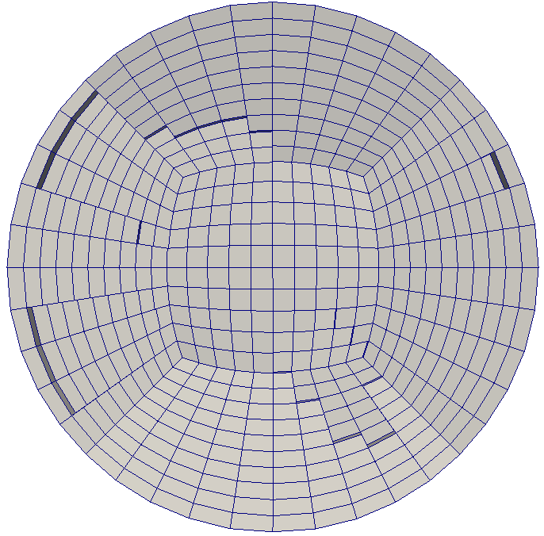

A brief introduction to machine learning and its potential application to CFD
Andre Weiner, Mathematical Modeling and Analysis (Chair of Prof. D. Bothe), TU Darmstadt
Get in touch: weiner@mma.tu-darmstadt.de
Slides available at: andreweiner.github.io/reveal.js/ofw2019_slides.html
Code and instructions: github.com/AndreWeiner/machine-learning-applied-to-cfd
Some warm-up questions
answer by a show of hands
What is machine learning?
Who has some hands-on experience with machine learning?
Who uses machine learning professionally?
Who knows the difference between ...
- Artificial intelligence
- Machine learning
- Deep learning
Jupyter notebooks
Google Colaboratory "colab"
Docker
Basic Python knowledge
Do you know PyTorch?
Who is working with PyTorch?
Outline
- Machine learning terminology ~10min
- Classifying stability regions of bubbles ~30min
- Learning the shape of a bubble (4D) ~25min
- A PyTorch-based boundary condition ~25min
- Discussion: application of ML in your work
- Learning the shape of a bubble (2D)
- Detecting volume fragments
Its a training ...
Feel free to ask questions at any time!
Machine learning terminology
Just enough to get you started
Artificial intelligence (AI)
“[AI is] the theory and development of computer systems able to perform tasks normally requiring human intelligence, such as visual perception, speech recognition, decision-making, and translation between languages.” Wikipedia
Deep Blue versus Garry Kasparov
Deep Blue was the fist chess computer to beet the world chess champion Garry Kasparov.
Source: Wikipedia
Mathpix
Mathpix can tranform images of handwritten notes, PDFs or books to math (LaTex) and text.
Source: www.mathpix.com
Machine learning (ML)
“Machine learning is the science (and art) of programming computers so they can learn from data.” Aurélien Géron (2017)
Machine learning (ML)
“[Machine Learning is the] field of study that gives computers the ability to learn without being explicitly programmed.” Arthur Samuel (1959)
Machine learning (ML)
“A computer program is said to learn from experience E with respect to some Task T and some performance measure P, if its performance on T, as measured by P, improves with experience E.” Tom Mitchel (1997)
Machine learning (ML)
“Tools and algorithms to generate function approximations (mappings) based on examples (function arguments and the corresponding function values).” my personal point of view
Deep learning (DL)
“Tools and algorithms to create and optimize deep neural networks.”

Data with labels
| Feature 1 $Re$ | Feature 2 $A$ | ... | Label 1 $c_d$ | Label 2 regime |
|---|---|---|---|---|
| 334 | 0.832 | ... | 0.123 | laminar |
| 2934 | 0.943 | ... | 0.384 | laminar |
| 12004 | 1.263 | ... | 0.573 | turbulent |
| 98204 | 2.284 | ... | 0.834 | turbulent |
| ... | ... | ... | ... | ... |
Image source: Kitware Inc., Flickr
Data without labels
| Feature 1 $Re$ | Feature 2 $A$ | Feature 3 $c_d$ | Feature 4 regime |
|---|---|---|---|
| 334 | 0.832 | 0.123 | laminar |
| 2934 | 0.943 | 0.384 | laminar |
| 12004 | 1.263 | 0.573 | turbulent |
| 98204 | 2.284 | 0.834 | turbulent |
Supervised learning
Learning based on pairs of features and labels

Unsupervised learning
Finding groups of similar data points
Reinforcement learning

Active flow control for drag reduction

Source: Jean Rabault et al., check out the code!
ML is interdisciplinary
- data analysis
- data visualization
- dimensionality reduction
- non-linear optimization
- high-performance computing
- probabilistic thinking
- domain knowledge
- ...
Why should you use ML?
Accuracy
and
Performance
Leverage data that is already available!
When should you use DL?
- high dimensional parameter spaces
- data is avaiable
- when you can live with small imperfections
When shouldn't you use DL?
- classical approaches are available
- available data is insufficient or of low quality
- when you can not live with small imperfections
Hans-on: Jupyter notebooks
~$ git clone https://github.com/AndreWeiner/machine-learning-applied-to-cfd.git
~$ cd notebooks
~$ jupyter-notebook
- Go to colab.research.google.com
- Switch to the GITHUB tab
- Search for AndreWeiner
- Select the repository machine-learning-applied-...
Classifying stability regions of rising bubbles
path_regime_classification.ipynb
Source: M. K. Tripathi et al. 2015, figure 1.
Manual binary classification
For now, consider only regions I and II.
$$ z(Ga^\prime, Eo^\prime) = w_1Ga^\prime + w_2Eo^\prime + b $$
$ Ga^\prime = log(Ga) $, $ Eo^\prime = log(Eo) $
$$ H(z (Ga^\prime, Eo^\prime)) = \left\{\begin{array}{lr} 0, & \text{if } z \leq 0\\ 1, & \text{if } z \gt 0 \end{array}\right. $$
$ w_1=8.0 $, $ w_2=1.0 $, $b=-12.0$
Performance metric I
True label: $$ y_i = \left\{\begin{array}{lr} 0, & \text{for region I }\\ 1, & \text{for region II} \end{array}\right. $$
Predicted label: $$ \hat{y}_i = H(z) = \left\{\begin{array}{lr} 0, & \text{if } z < 0\\ 1, & \text{if } z \ge 0 \end{array}\right. $$
Performance metric II
Linearly weighted inputs $$ z_i=z(X_i)=\sum\limits_{j=1}^{N_f}w_jX_{ij}+b $$
with $$ X_i = \left[ Ga^\prime_i, Eo^\prime_i \right],\quad w = \left[ w_1, w_2 \right]^T $$
Performance metric III
Loss function $$ L(w) = \frac{1}{2}\sum\limits_{i=1}^N \left(y_i - \hat{y}_i(X_i,w) \right)^2 $$
The term in parenthesis can take the values
$1$, $0$, or $-1$.
Gradient decent
Simple update rule for the weights $$ w^{n+1} = w^n - \eta \frac{\partial L(w)}{\partial w} = \begin{pmatrix}w_1^n\\ w_2^n\\ b^n \end{pmatrix} + \eta \sum\limits_{i=1}^N \left(y_i - \hat{y}_i(X_i,w^n) \right) \begin{pmatrix}Ga^\prime_i\\ Eo^\prime_i\\ 1 \end{pmatrix} $$
$\eta$ - learning rate
Perceptron algorithm
class SimpleClassifier():
'''Implementation of a simple *perceptron* and the perceptron learning rule.
'''
...
def train(self, X, y):
for e in range(self.epochs_):
self.weights_ += self.eta_ * self.lossGradient(X, y)
self.loss_.append(self.loss(X, y))
if self.loss_[-1] < 1.0E-6:
print("Training converged after {} epochs.".format(e))
break
Why is the loss changing so randomly?
What would happen if the data was not linearly separable?
Conditional probabilities
What is probability of a point $X_i$ to be in region II $$ p(y_i=1|X_i) $$
- for points far in region II?
- for points far in region I?
- for points close to the decision boundary?
Sigmoid function
$$ \sigma_i = \sigma (z_i) = \frac{1}{1+e^{-z_i}} $$
Maximum likelihood
For all points $i$:
- maximize $p(y_i=0|X_i)$ if $X_i$ in I
- maximize $p(y_i=1|X_i)$ if $X_i$ in II
Binary cross entropy
$$ L(w) = -\frac{1}{N}\sum\limits_{i=1}^N y_i \mathrm{ln}(\hat{y}_i(X_i,w)) + (1-y_i) \mathrm{ln}(1-\hat{y}_i(X_i,w)) $$ $ \hat{y}_i = \sigma (z(X_i,w)) $ $$ \frac{\partial L}{\partial w} = -\frac{1}{N}\sum\limits_{i=1}^N (y_i - \hat{y}_i) \begin{pmatrix}Ga^\prime_i\\ Eo^\prime_i\\ 1 \end{pmatrix} $$
Logistic regression
class LogClassifier():
'''Implemention of a logistic-regression classifier.
'''
...
def probability(self, X):
z = np.dot(np.concatenate((X, np.ones((X.shape[0], 1))), axis=1), self.weights_)
return 1.0 / (1.0 + np.exp(-z))
def predict(self, X):
return np.heaviside(self.probability(X) - 0.5, 0.0)
Non-linear decision boundaries
# classifier to separate region I and II
classifier_I_II = LogClassifier()
classifier_I_II.train(X_I_II, y_I_II, tol=0.1)
...
# classifier to separate region I and III
classifier_I_III = LogClassifier()
classifier_I_III.train(X_I_III, y_I_III, tol=0.05)
Combining linear models
$ \hat{y}_{i,II,III} = \sigma (w_{21}\hat{y}_{i,II} + w_{22}\hat{y}_{i,III} + b_2) $
Multi-class classification I
One-hot encoding

Multi-class classification II
Softmax function for class $j$ with $K$ classes $$ p(y_{ij}=1 | X_i) = \frac{e^{z_{ij}}}{\sum_{j=0}^{K-1} e^{z_{ij}}} $$
Multi-class classification III
Categorial cross entropy for point $i$ and class $j$ $$ L(w) = -\frac{1}{N} \sum\limits_{j=0}^{K-1}\sum\limits_{i=1}^{N} y_{ij} \mathrm{ln}\left( \hat{y}_{ij} \right) $$
PyTorch
- Deep-learning framework
- layers, optimizers, automatic diff., ...
- frontend: Python and C++
- backend: C++ and Cuda
- easy model serialization
PyTorch classifier
class PyTorchClassifier(nn.Module):
'''Multi-layer perceptron with 3 hidden layers.
'''
def __init__(self, n_features=2, n_classes=5, n_neurons=60, activation=torch.sigmoid):
super().__init__()
self.activation = activation
self.layer_1 = nn.Linear(n_features, n_neurons)
self.layer_2 = nn.Linear(n_neurons, n_neurons)
self.layer_3 = nn.Linear(n_neurons, n_classes)
def forward(self, x):
x = self.activation(self.layer_1(x))
x = self.activation(self.layer_2(x))
return F.log_softmax(self.layer_3(x), dim=1)
Training loop
regimeClassifier = PyTorchClassifier()
# categorial cross entropy taking logarithmic probabilities
criterion = nn.NLLLoss()
# stochastic gradient decent: ADAM
optimizer = optim.Adam(regimeClassifier.parameters(), lr=0.005)
...
# convert feature and label arrays into PyTorch tensors
featureTensor = torch.from_numpy(np.float32(logData[["Ga", "Eo"]].values))
labelTensor = torch.tensor(y_numeric, dtype=torch.long)
for e in range(1, epochs):
optimizer.zero_grad()
# run forward pass through the network
log_prob = regimeClassifier(featureTensor)
# compute cross entropy
loss = criterion(log_prob, labelTensor)
# compute gradient of the loss function w.r.t. to the model weights
loss.backward()
# update weights
optimizer.step()
Learning the shape of a bubble
GPU support in colab
- 4D_shape_approximation.ipynb
- Edit -> Notebook settings
- Hardware accelerator -> select GPU
- Check: Executing PyTorch operations using cuda.
The data set
Shape parameterization
$ p(x_i,y_i,z_i,t_i) \rightarrow r(\varphi_i, \vartheta_i, t_i) $
Using domain knowledge
The shape will be always roughly ellipsoidal.
How can be use this knowledge?
def estimate_half_axis(x, y, z):
''' Estimate the half axis of an ellipsoid from a point cloud.'''
...
a = 0.5 * (np.amax(x) - np.amin(x))
b = 0.5 * (np.amax(y) - np.amin(y))
c = 0.5 * (np.amax(z) - np.amin(z))
return a, b, c
half-axis mapping $ f:\mathbb{R^1}\rightarrow\mathbb{R^3} $
Function approximator
class SimpleMLP(torch.nn.Module):
def __init__(self, n_inputs=1, n_outputs=1, n_layers=1, n_neurons=10, activation=torch.sigmoid, batch_norm=False):
super().__init__()
self.n_inputs = n_inputs
self.n_outputs = n_outputs
self.n_layers = n_layers
self.n_neurons = n_neurons
self.activation = activation
...
# input layer to first hidden layer
self.layers.append(torch.nn.Linear(self.n_inputs, self.n_neurons))
# add more hidden layers if specified
if self.n_layers > 1:
for hidden in range(self.n_layers-1):
self.layers.append(torch.nn.Linear(self.n_neurons, self.n_neurons))
# last hidden layer to output layer
self.layers.append(torch.nn.Linear(self.n_neurons, self.n_outputs))
print("Created model with {} weights.".format(self.model_parameters()))
def forward(self, x):
...
for i_layer in range(len(self.layers)-1):
x = self.activation(self.layers[i_layer](x))
return self.layers[-1](x)
def model_parameters(self):
return sum(p.numel() for p in self.parameters() if p.requires_grad)
Training loop
def approximate_function(x_train, y_train, x_val, y_val, model, l_rate=0.001, batch_size=128,
max_iter=1000, path=None, device='cpu', verbose=100):
...
# convert numpy arrays to torch tensors
x_train_tensor = torch.from_numpy(x_train.astype(np.float32))
y_train_tensor = torch.from_numpy(y_train.astype(np.float32))
...
# define loss function
criterion = torch.nn.MSELoss()
# define optimizer
optimizer = torch.optim.Adam(params=model.parameters(), lr=l_rate)
...
# move model and data to gpu if available
model.to(device)
for e in range(1, max_iter+1):
# backpropagation
model = model.train()
loss_sum_batches = 0.0
for b in range(int(n_batches)):
x_batch = x_train_tensor[b*batch_size:min(x_train_tensor.shape[0], (b+1)*batch_size)].to(device)
y_batch = y_train_tensor[b*batch_size:min(x_train_tensor.shape[0], (b+1)*batch_size)].to(device)
optimizer.zero_grad()
output_train = model(x_batch)
loss_train = criterion(output_train.squeeze(dim=1), y_batch)
loss_train.backward()
optimizer.step()
loss_sum_batches += loss_train.item()
history_train.append(loss_sum_batches / n_batches)
...
if history_train[-1] < best_loss:
best_loss = history_train[-1]
if path is not None:
torch.save(model.state_dict(), path)
return model.eval(), np.asarray(history_train), np.asarray(history_val)
axis_model = SimpleMLP(n_inputs=1, n_outputs=3, n_layers=2, n_neurons=10,
activation=torch.sigmoid, batch_norm=False)
...
axis_model, train_loss, val_loss = \
approximate_function(X_train, axis_train, X_val, axis_val,
axis_model, max_iter=10000, l_rate=0.01, batch_size=100,
path=set_path("3mm_axis_model.pt"), device='cpu', verbose=1000)
$$ \tilde{r}_i = r_i / r_{elli} $$
def ellipsoidal_radius(phi, theta, t, axis_model):
'''Compute the radius of an ellipsoid with instantaneous half axis.'''
...
t_tensor = torch.from_numpy(t.astype(np.float32))
a, b, c = axis_model(t_tensor).detach().numpy().T
radius = np.sqrt(np.square(a * np.sin(phi) * np.cos(theta))
+ np.square(b * np.cos(phi))
+ np.square(c * np.sin(phi) * np.sin(theta)))
return radius
Mean/stdev of original radius: 0.5306/0.0938
Mean/stdev of rescaled radius: 0.9090/0.0965
Mean/stdev of rescaled radius [0,1]: 0.5877/0.1882
Training, validation, and test data
X = np.vstack([phi, theta, data.t.values]).T
X_train, X_tv, r_train, r_tv = train_test_split(X, data.rad_01.values, test_size=0.2, random_state=42)
X_val, X_test, r_val, r_test = train_test_split(X_tv, r_tv, test_size=0.5, random_state=42)
...
"The training set contains 934983 points."
"The validation set contains 116873 points."
"The test set contains 116873 points."
radius_model = SimpleMLP(n_inputs=3, n_outputs=1, n_layers=8, n_neurons=40, activation=torch.relu, batch_norm=False)
radius_model, train_loss, val_loss = approximate_function(X_train, r_train, X_val, r_val, radius_model, max_iter=1000,
l_rate=0.001, batch_size=50000, path=set_path("3mm_radius_model.pt"), device=device, verbose=10)
Test set: aximum/mean relative error 4.42/0.29 %
Final model
class ShapeModel(torch.nn.Module):
def __init__(self, axis_model, radius_model, rs_min, rs_max,):
super().__init__()
self.axis_model = axis_model
self.radius_model = radius_model
self.rs_min = torch.tensor(rs_min, dtype=torch.float32)
self.rs_max = torch.tensor(rs_max, dtype=torch.float32)
def forward(self, x):
# scaled model radius
rs = self.radius_model(x).squeeze(1)
# ellipsoidal radius
re = self.ellipsoidal_radius(x)
# transform back
r = (rs * (self.rs_max - self.rs_min) + self.rs_min) * re
return r
def ellipsoidal_radius(self, x):
axis = self.axis_model(x[:,2].unsqueeze(-1))
re = torch.sqrt(
(axis[:,0] * torch.sin(x[:,0]) * torch.cos(x[:,1]))**2
+ (axis[:,1] * torch.cos(x[:,0]))**2
+ (axis[:,2] * torch.sin(x[:,0]) * torch.sin(x[:,1]))**2
)
return re
Tracing the model
traced_shape_model = torch.jit.trace(shape_model, X_0_tensor[0].unsqueeze(0))
traced_shape_model.save(set_path("shape_model.pt"))
It is really that simple!
A PyTorch-based boundary condition in OpenFOAM®
Why a Docker image?
Compiling OF + PyTorch requires to re-compile OF with
-D_GLIBCXX_USE_CXX11_ABI=0
For details, check out the Github repo for the Dockerfile.
Pull the Docker image and create a container
# pull the image from Dockerhub
# (use sudo if your user is not in the docker group)
~$ docker pull andreweiner/of_pytorch:of1906-py1.1-cpu
~$ cd ../OpenFOAM
~$ ls
apps cases runContainer.sh
~$ ./runContainer
Working directory in the container
weiner@01f4d1ff183a:/home$ ls
apps cases runContainer.sh
First things first
~$ source /opt/OpenFOAM/OpenFOAM-v1906/etc/bashrc
~$ cd apps/pyTorchDisplacement/
In pyTorchDisplacementPointPatchVectorField.H
#include <torch/script.h>
...
// private data
vector center_;
word model_name_;
std::shared_ptr<torch::jit::script::Module> pyTorch_model_;
In pyTorchDisplacementPointPatchVectorField.C
pyTorchDisplacementPointPatchVectorField::
pyTorchDisplacementPointPatchVectorField
(
...
)
:
fixedValuePointPatchField<vector>(p, iF, dict),
center_(dict.lookup("center")),
model_name_(dict.lookupOrDefault<word>("model", "shape_model.pt"))
{
pyTorch_model_ = torch::jit::load(model_name_);
assert(pyTorch_model_ != nullptr);
...
}
In pyTorchDisplacementPointPatchVectorField.C
void pyTorchDisplacementPointPatchVectorField::updateCoeffs()
{
...
torch::Tensor featureTensor = torch::ones({localPoints.size(), 3});
forAll(localPoints, i)
{
scalar pi = constant::mathematical::pi;
vector x = localPoints[i] - center_;
scalar r = sqrt(x & x);
scalar phi = acos(x.y() / r);
scalar theta = std::fmod((atan2(x.x(), x.z()) + pi), pi);
if (x.x() < 0.0)
{
phi = 2.0 * pi - phi;
}
featureTensor[i][0] = phi;
featureTensor[i][1] = theta;
featureTensor[i][2] = t.value();
}
std::vector<torch::jit::IValue> modelFeatures{featureTensor};
torch::Tensor radTensor = pyTorch_model_->forward(modelFeatures).toTensor();
auto radAccessor = radTensor.accessor<float,1>();
vectorField result(localPoints.size(), Zero);
forAll(result, i)
{
vector x = localPoints[i] - center_;
result[i] = x / mag(x) * (radAccessor[i] - mag(x));
}
Field<vector>::operator=(result);
...
}
Compile the BC
EXE_INC = \
... \
-I$(TORCH_LIBRARIES)/include \
-I$(TORCH_LIBRARIES)/include/torch/csrc/api/include
...
EXE_LIBS = \
...\
-rdynamic \
-Wl,-rpath,$(TORCH_LIBRARIES)/lib $(TORCH_LIBRARIES)/lib/libtorch.so $(TORCH_LIBRARIES)/lib/libc10.so \
-Wl,--no-as-needed,$(TORCH_LIBRARIES)/lib/libcaffe2.so \
-Wl,--as-needed $(TORCH_LIBRARIES)/lib/libc10.so \
-lpthread
~$ wmake
Don't worry about the warning messages!
moving_boundary
~$ cd ../../cases/moving_boundary
~$ ls
0 Allclean Allrun constant shape_model.pt system
system/controlDict
libs ( "libPyTorchMotion.so");
0/pointDisplacement
wall
{
type pyTorchDisplacement;
center (0 0 0);
model "shape_model.pt";
value uniform (0 0 0);
}
Clip of initial mesh
THE END
Thanks @mma: Dennis Hillenbrand, Dirk Gründing, Johannes Kromer, Mathis Fricke, Matthias Niethammer, Tobias Tolle, Tomislav Marić
Thanks to you! Let me know what you think!
Get in touch: weiner@mma.tu-darmstadt.de
Time for discussion ...